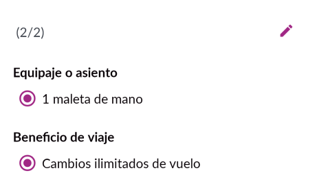
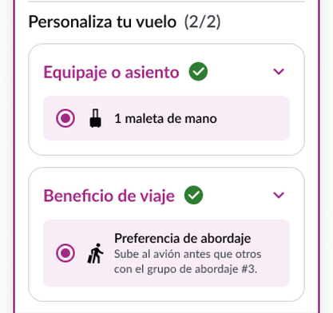
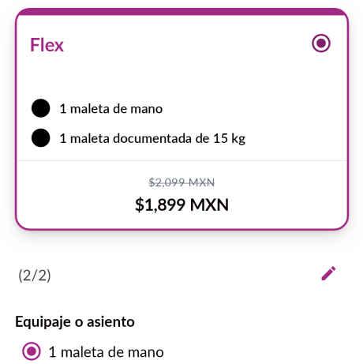
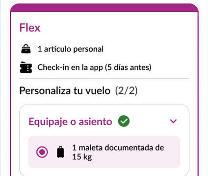

Diseño Applaudo · Volaris PoC 2 · Fare Flex Android
Qué aprendimos al pedirle a un agente de IA que construya una feature real usando solo el contrato, y qué cambiamos.
Qué buscamos
Volaris PoC 2: la tarifa Fare Flex en Android, construida por un agente de IA.
Dice qué se construye, con qué piezas y cómo se ve.
Construye la feature usando solo el contrato.
Igual a Figma y con menos retrabajo.
Si el contrato es claro, ¿el agente acierta a la primera?
Antecedente · Primera prueba
La corrida del equipo de desarrollo no sirvió como referencia: no medía lo que queríamos medir.
Se partió de un archivo de Figma que no era el vigente.
No se enfocó en el flujo principal de Flex.
Se armaron pantallas que no estaban contempladas.
Sin un alcance cerrado, desviarse era fácil. Hacía falta una corrida limpia, con el contrato como única fuente.
Nuestra corrida «bien hecha»
Solo el pack de contratos, solo el flujo principal, sin Figma ni mockups.
Hizo lo que el contrato pedía, tras sus enmiendas.
10 de 12 piezas ya existían. Solo creó las 2 que el contrato pedía.
1,770 vs 5,779 líneas añadidas. El equipo cubrió más alcance (APIs, CMS, caché).
Además dejó a la vista los huecos de datos (CMS, precios, carrito) en vez de rellenarlos.
Nuestra corrida · Resultado visual
Diferencias visuales contra Figma. Ejemplo: selector Flex completado (2/2).


Sin tipografía, alturas ni espacios por elemento, el agente decidió por convención.
Salieron filas sin ícono y círculos de relleno donde Figma tiene íconos reales.
Sin Flex en el CMS, en los precios ni en el carrito, la card no se pinta en la app real.
36 observaciones contra Figma; 4 coinciden. Quedan 32 diferencias.
Comparación
Hoja Zero → Flex completada: lo que armó el agente, al lado de Figma.


Cada uno ganó en algo distinto. Lo que el equipo tomó de Figma tiene que vivir en el contrato.
Lo que aprendimos en diseño
El contrato decía que Flex era una cuarta tarifa. Las reglas de negocio dicen otra cosa.
Flex como tarifa extra, sin tocar Basic.
La implementación del equipo siguió la regla correcta. Desde ahora, las reglas de negocio se validan antes de sellar el contrato.
La señal estaba en una nota de Figma («La card de Básica ahora será Flex») y la tratamos como nota vieja.
El cambio central
Antes cubrían piezas y estados. Ahora cubren todo lo que el agente necesita para no adivinar.
Ejemplo · Selector Flex
El bloque «Equipaje o asiento» del selector Flex, contado en lenguaje simple.
El nuevo flujo
Nada se construye hasta que reglas, datos y UI están sellados.
Qué sigue
La segunda corrida usa el pack nuevo, con la misma feature.
Beast (nuestro agente de design system) armó 11 contratos, 2 de ellos de composición.
Adonay sella contrato y reglas. Harold firma paridad visual y composición.
El agente reconstruye Fare Flex solo con el pack firmado.
¿Cuántas de las 32 diferencias se cierran?
Diferencias contra Figma lo más cerca de cero posible.
Diseño Applaudo · Volaris PoC 2
Gracias · Preguntas